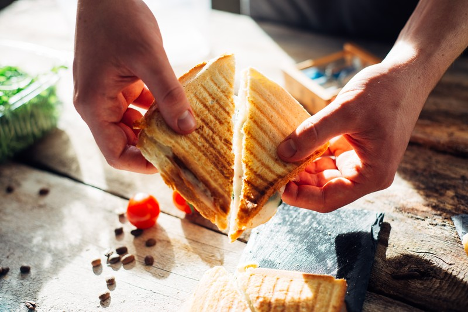
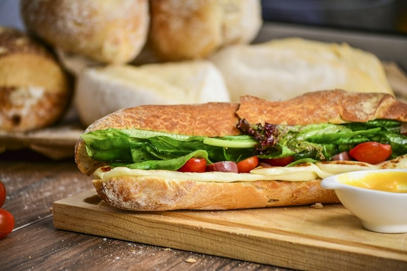
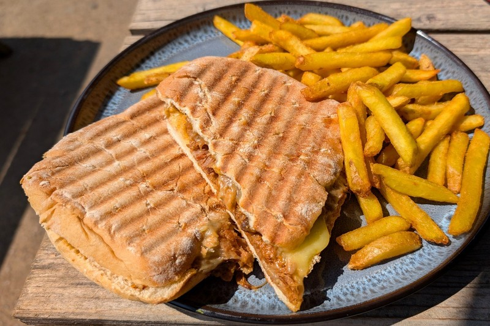
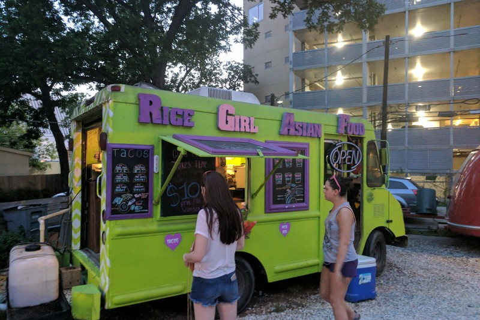
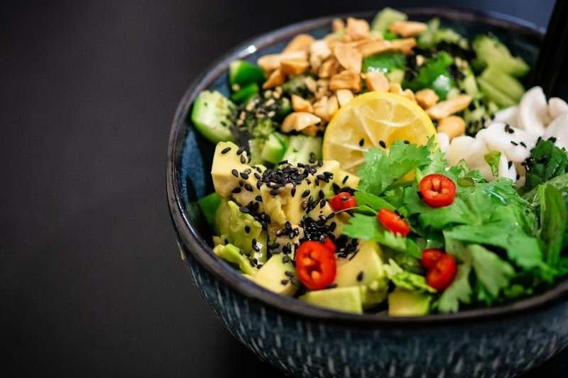
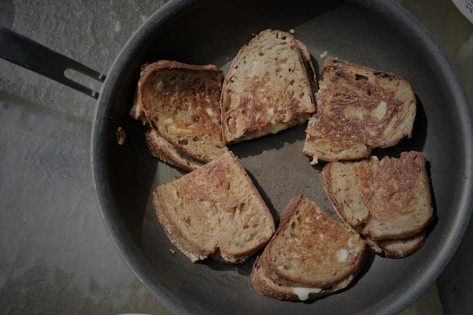
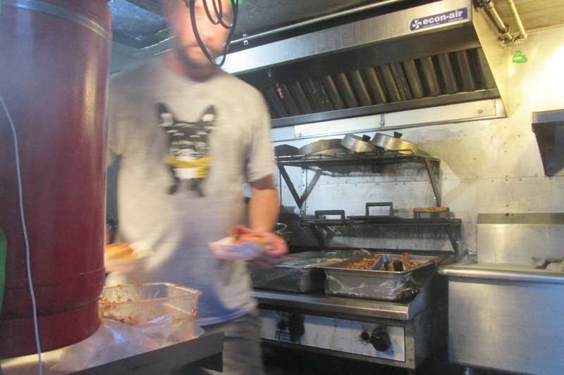

CARD1: The Art of the Perfect Cheese Pull
Source: test-cheese-pull-wiki.jpg

CARD7: The Crust Chemistry: Sourdough vs Brioche
Source: test-bread.jpg

CARD8: Mastering the Flattop Griddle
Source: test-chef-kitchen.jpg
CARD9: From Farm to Griddle: Sourcing Small-Batch Cheeses
Source: cand-chef-work.jpg
CARD10: Alpine Melts & Forest Truffles: Elevating Comfort
Source: toit-smoked-brisket-melt-fries.jpg

CARD11: Midnight Griddle Runs: Late-Night Food Truck Vibes
Source: test-foodtruck-austin.jpg

CARD12: The Perfect Pair: Why Tomato Bisque & Melts Belong Together
Source: test-soup.jpg

CARD14: Crisp Pressing Secrets: Panini Ribs vs Flat-Top Searing
Source: test-pan-melt.jpg

CARD15: The Window Connection: Why Food Truck Hospitality Feels Personal
Source: cand-truck-kitchen.jpg

CARD17: The Evolution of Food Truck Culture
Source: cand-foodtruck-scene.jpg
CARD18: Curating a Gourmet Melt Bar: Food Truck Catering
Source: track-buffet-setup.jpg